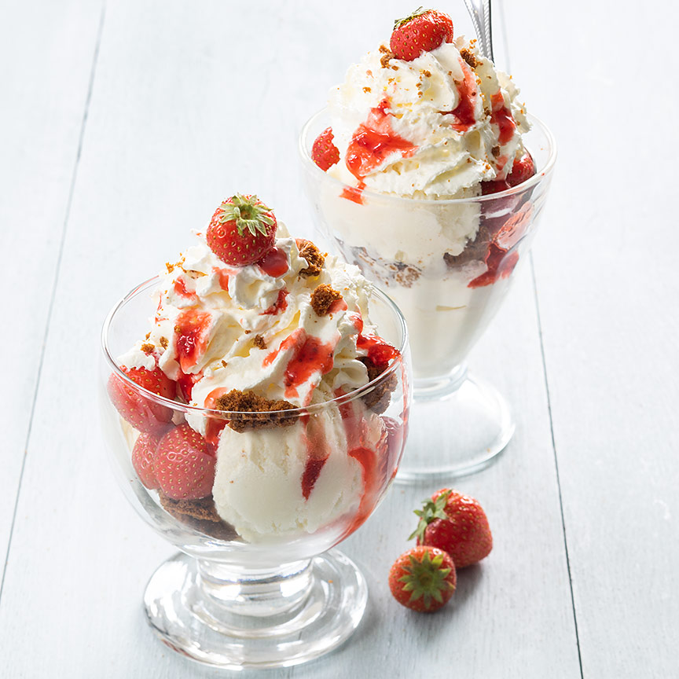

Snijd de grote aardbeien in stukken en houd 4 mooie kleine aardbeien apart.
Breek de koekjes in stukjes.
Schep 2 bollen ijs in een kommetje of glazen coupe en verdeel wat aardbeien en koekkruimels er over. Schep er weer wat ijs op met aardbeien en koekjes.
Spuit als laatste nog een mooie toef slagroom bovenop. Garneer de aardbeien coupe met aardbeiensaus en de de apart gehouden aardbeien. Serveer direct.

Tip deze aardbeien coupe is ook lekker met wat plakjes banaan.